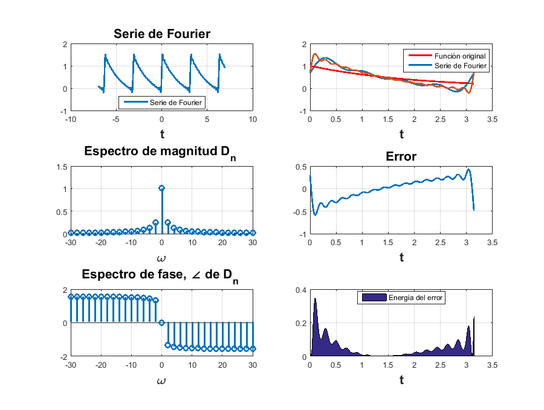
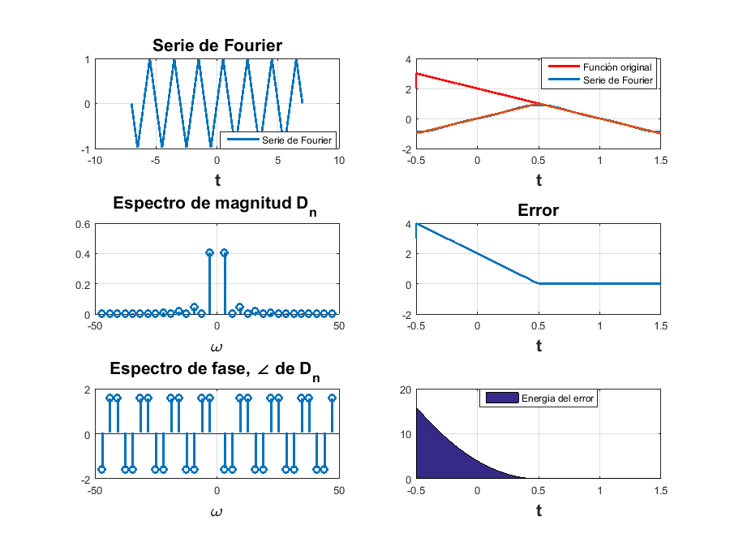
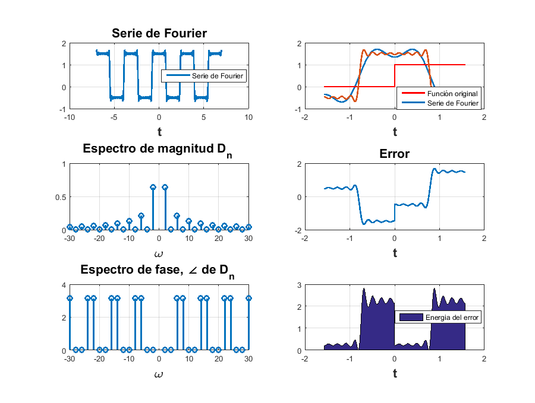
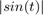
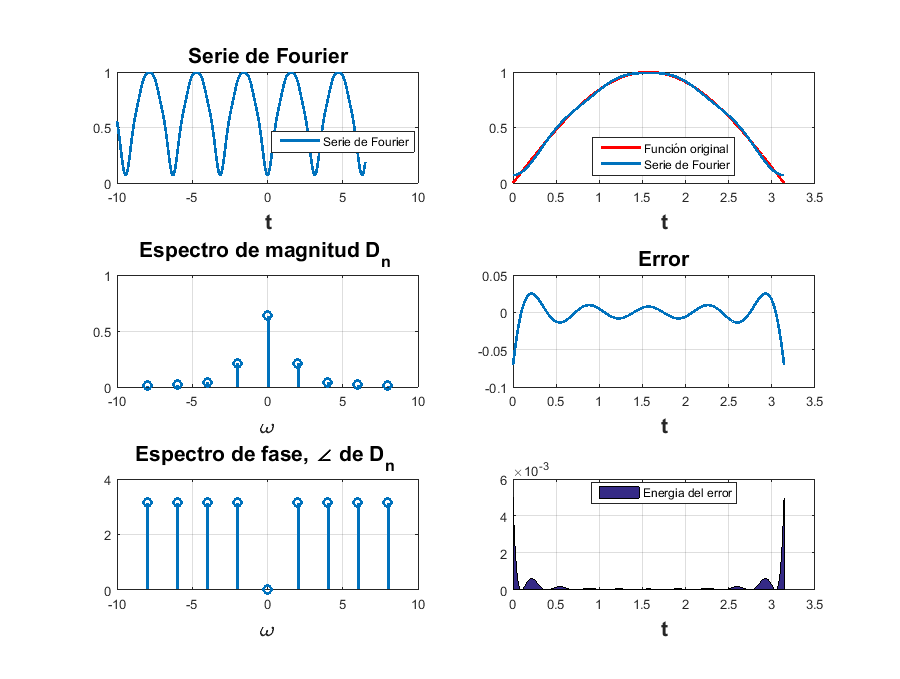
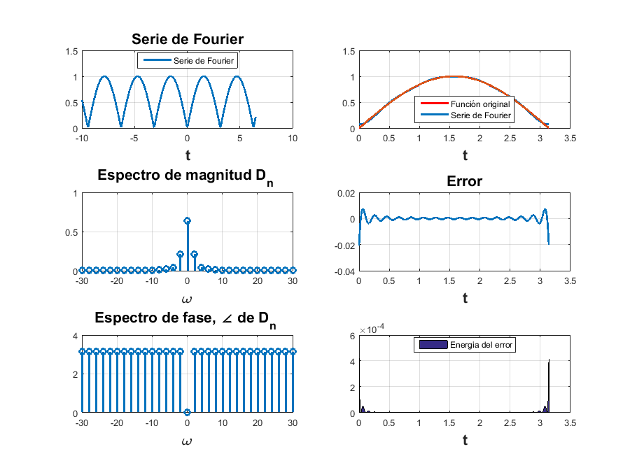
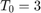
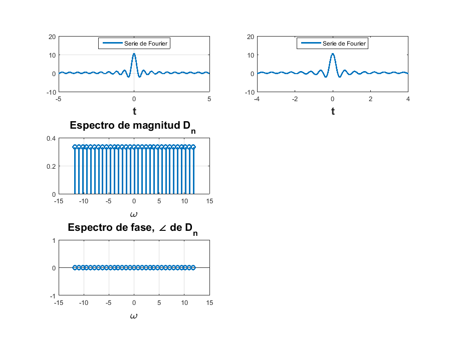
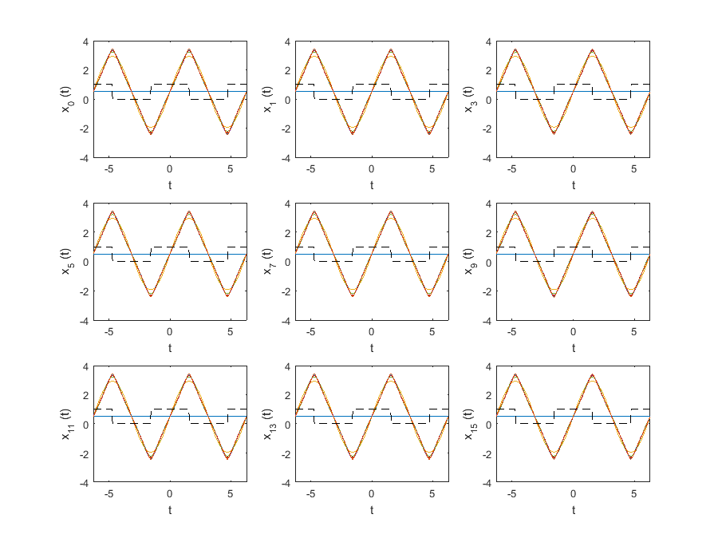
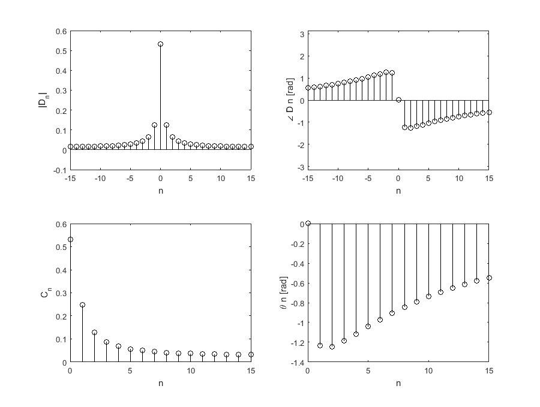

Práctica 5: Series de Fourier en tiempo continuo
Contents
Datos generales:
Autores:
- Marmolejo Martínez Hamlet
- Jorge Ortiz Velazco Jaime Jonathan
- Perez Sanchez Isaac
Grupo: 2TV2
Profesor: Dr. Rafael Martinez Martinez
Objetivos
* Realizar gráficas de series de Fourier exponenciales y trigonométricas en tiempo continuo * Manipulación de instrucciones en MATLAB * Calculo númerico de los coeficientes de Fourier
Introduccion : Series de Fourier en tiempo continuo
Como podemos saber, las series de Fourier es la suma de funciones armonicas de manera infinita, que llegaran a formar una funcion periodica o una funcione en cierto intervalo, el proposito de esta practica es mostrar las series de Fourier en tiempo continueo dada una exponencial compleja y observar como le comporta y adecua una serie de Fourier a una funcion $$f(t) dada. Por otro parte, tambien mostraremos el espectro de magnitud, espectro de fase y energia de error de cada serie.
Desarrollo
Ejemplo 6.1
Con serie y espectro trigonometrico, no es necesario entregar el código, solo la aplicación al problema especifico, debe de indicar la función y los valores de sus coeficientes (sin incluir el procedimiento) Tranformando An y bn a un dn esto nos queda como
clf(); d0=0.504; dn=@(n) (0.504*(2/(1+16*(n.^2))))-(0.504*((8*n)/(1+16*(n.^2))))*j; t0=0; tf=pi; f=@(t) exp(-t/2); armo=4; a=-7; b=7; %Funcion con un armonico de 4 sfjon(t0,tf,dn,d0,f,armo,a,b) %Funcion con unarmonicod de 15 armo=15; sfjon(t0,tf,dn,d0,f,armo,a,b)
Ejemplo 6.2.
Con serie y espectro exponencial y A=3, no es necesario entregar el código, solo la aplicación al problema especifico, debe de indicar la función y los valores de sus coeficientes (sin incluir el procedimiento)
clf(); d0=0; dn=@(n) -(((8/((n.^2)*(pi.^2)))*sin((n*pi)/2))/2)*j; t0=-.5; tf=1.5; f=@(t) (-1/2<t<1/2).*(2*t)+(1/2<t<3/2).*(2*(1-t)); armo=4; a=-7; b=7; %Funcion con un armonico de 4 sfjon(t0,tf,dn,d0,f,armo,a,b) %Funcion con un armonico de 15 armo=15; sfjon(t0,tf,dn,d0,f,armo,a,b)
Ejemplo 6.4.
%Con serie y espectro exponencial, no es necesario entregar el código, solo la aplicación al problema especifico, debe de indicar la función y los valores de sus coeficientes (sin incluir el procedimiento) clf(); d0=0.5; dn=@(n) (2/(n*pi))*sin((n*pi)/2)-0j; t0=-pi/2; tf=pi/2; f=@(t) heaviside(t); armo=4; a=-7; b=7; %Funcion con un armonico de 4 sfjon(t0,tf,dn,d0,f,armo,a,b) %Funcion con unarmonicod de 15 armo=15; sfjon(t0,tf,dn,d0,f,armo,a,b)
Ejercicio 6.5
Encontrar la serie exponencial de Fourier y graficar su espectro exponencial de la funcion .
Despues de hacer los calculos tenemos los valores del dn y el d0. Realizamos nuestras grafucas para 4 armonicos
d0=0.6366;
dn=@(n) 2/(pi*(1-(4*n^2)));
t0=0;
tf=pi;
f=@(t) abs(sin(t)); % escribimos nuestra funcion original
armo=4;
a=-10;
b=6.5;
sfchak(t0,tf,dn,d0,f,armo,a,b)
 Ahora lo hacemos para 15 armonicos
d0=0.6366;
dn=@(n) 2/(pi*(1-(4*n^2)));
t0=0;
tf=pi;
f=@(t) abs(sin(t)); % escribimos nuestra funcion original
armo=15;
a=-10;
b=6.5;
sfchak(t0,tf,dn,d0,f,armo,a,b)
 Ejemplo 6.7
Con serie y espectro exponencial y  sin incluir la gráfica de f, error ni energía del error,
%no es necesario entregar el código, solo la aplicación al problema especifico, %debe de indicar la función y los valores de sus coeficientes (sin incluir el procedimiento) % Con 4 armónicos d0=0.504; dn=@(n) 1/3; t0=-4; tf=4; armo=4; a=-5; b=5; sfc1(t0,tf,dn,d0,armo,a,b) %Con 15 armónicos armo=15; sfc1(t0,tf,dn,d0,armo,a,b)
E. 6
Codigo similiar al C6.2 pero sin funciones inline y para el ejemplo 6.2 realizado anteriormnente
x =@(t) mod(t+pi/2,2*pi)<=pi ; t = linspace (-2*pi, 2*pi,1000); sumterms = zeros(16, length(t)); sumterms(1,:) = 1/2; for n = 1:size(sumterms,1)-1; sumterms(n+1,:) = 24/(n^2*pi^2)*sin(n*pi/2)*sin(n*t); end sm = cumsum (sumterms); figure(1); clf; ind = 0; for N = [0,1:2:size(sumterms, 1)-1], ind = ind+1; subplot (3,3,ind); plot(t,sm, '-',t,x(t), 'k--'); axis ([-2*pi 2*pi -4 4]); xlabel ('t'); ylabel (['x_{',num2str(N),'} (t)']); end
E. 7
%Aproximacion de D0 a D4 del ejemplo de la práctica con el código COMPUTER EXAMPLE C6.4 T_0 = 3; N_0 = 256; T = T_0/N_0; t = (0:T:T*(N_0-1))'; M = 15; x = exp(-t/2); x(1) = 4; D_n = fft (x)/N_0; n = [-N_0/2:N_0/2-1]'; clf; subplot (2, 2, 1); stem(n, abs(fftshift (D_n)),'k'); axis ([-M M -.1 .6]); xlabel('n'); ylabel('|D_n|'); subplot (2, 2, 2); stem(n, angle(fftshift(D_n)),'k'); axis([-M M -pi pi]); xlabel ('n'); ylabel('\angle D n [rad]'); n = [0:M]; C_n(1) = abs(D_n(1)); C_n(2:M+1) = 2*abs (D_n(2:M+1)); theta_n(1) = angle(D_n(1)); theta_n(2:M+1) = angle(D_n(2:M+1)); subplot (2, 2, 3); stem(n,C_n,'k'); xlabel ('n'); ylabel('C_n'); subplot (2, 2, 4); stem(n,theta_n,'k'); xlabel ('n'); ylabel('\theta n [rad]'); %Aproximacion del total de D0 a D4 del ejemplo de la práctica con el código implementado trapecio('exp(-x/2)',-4,4,10)
La aproximacion de la integral es 14.700360
Referencias
B. P. Lathi, Linear Systems and Signals, Second Edition, Oxford University Press, Inc., 2005, segunda edicion, pp. 689.